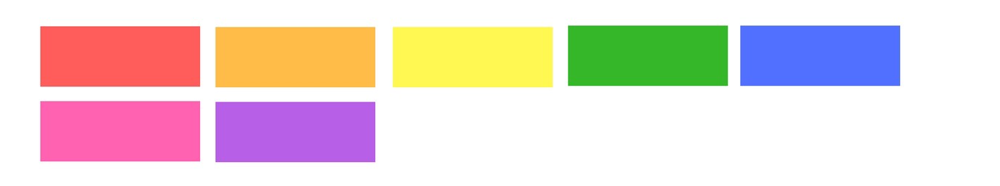

У таблиці стилів браузера для кожного елемента встановлений його тип - властивість display. Поведінка елемента визначається його типом. Найпоширеніші типи - це блокові (block) і рядкові (inline) елементи. Крім цього, існує певна кількість додаткових типів, наприклад рядково-блокові (Inline-block) елементи.

- Рядкові елементи призначені для виділення і оформлення текстового контенту. Наприклад посилання, кнопка, зображення тощо.
- Блокові використовуються для розмітки текстових контейнерів (заголовок, список, абзац) і великих смислових розділів (секція, шапка, підвал).
- Дізнатися тип будь-якого елемента можна в довіднику або специфікації .
Іноді необхідно, щоб рядковий елемент поводився як блоковий і навпаки, тому значення властивості display можна змінювати, у разі потреби, на будь-яке інше.
Блокові елементи (block)
Візуально - це прямокутні області, що йдуть одна за одною зверху вниз.

- Для них задана властивість display: block.
- Вони займають всю доступну ширину рядка (простір за горизонталлю) всередині батька.
- Їх висота визначається вмістом, якщо явно не задана у властивості height.
- Вони завжди починаються з нового рядка, тому кілька сусідніх блокових елементів розташовані вертикально один під одним.
- Їм можна задавати будь-які властивості геометрії елемента: ширину, висоту, поля, рамки і відступи.
Корисно: Переважна більшість елементів - блокові. Наприклад <h1>, <p>, <section>, <ul>, <li>, <div>, <header> і багато інших.
Фіксована ширина
Навіть якщо ширина блокових елементів задана явно, вони все одно будуть розташовуватися вертикально один під одним. Все вільне місце в рядку за замовчуванням займається автоматичним правим відступом (margin-right) елемента.
See the Pen lesson-05-fixed-width-block by goit-academy (@goit-academy) on CodePen.
Інструменти розробника: Щоб подивитися на відступ елемента, необхідно використовувати інструменти розробника, візуально на сторінці вони жодним чином не виділяються.
Горизонтальне центрування блокових елементів
Блоковий елемент можна горизонтально центрувати всередині його батька, у разі, коли ширина батька більша за ширину центрованого елемента. Тобто блоковому елементу задана фіксована ширина. Для цього використовується особливість автоматичних горизонтальних відступів.
За замовчуванням у блокового елемента автоматичний правий відступ, який займає увесь вільний простір в рядку.
.box {
margin-right: auto;
}
Якщо задати автоматичні лівий і правий відступи, вільний простір розподіляється порівну між ними і блоковий елемент центрується.
.box {
width: 300px;
background-color: tomato;
margin-right: auto;
margin-left: auto;
}
Для коротшого запису можна використовувати збірну властивість margin, задавши нульові вертикальні відступи і автоматичні горизонтальні.
.box {
width: 300px;
background-color: tomato;
margin: 0 auto;
}
See the Pen lesson-05-auto-margin by goit-academy (@goit-academy) on CodePen.
Елемент-контейнер
Контейнер, обгортка, враппер, центрувальник - все це імена стандартного блокового елемента-контейнера для обмеження ширини і центрування контенту сторінки.

В CSS створюється клас container, який можна задати будь-якому елементу, але на практиці це завжди буде несемантичний <div>. Контейнеру обов'язково встановлюється ширина (фіксована або адаптивна), відповідно до сітки з макету, автоматичні горизонтальні відступи і необов'язкові поля, також за макетом.
.container {
width: 480px;
margin: 0 auto;
padding: 0 15px;
}
Контейнер може бути всього один - загальний, який обгортає відразу увесь контент сторінки. У наступному прикладі межі контейнера виділені пунктиром для наочності.
See the Pen lesson-05-single-container by goit-academy (@goit-academy) on CodePen.
Найчастіше контейнерів декілька, оскільки в кожному розділі сторінки необхідний свій контейнер. За такого підходу можна зручно задавати різний повнорозмірний фон та інші стилі оформлення окремих розділів сторінки.
See the Pen lesson-05-multiple-containers by goit-academy (@goit-academy) on CodePen.
Рядкові елементи (inline)
Візуально розташовуються в одному рядку один за одним доти, доки в ньому вистачає місця, після чого почнуть перестрибувати на наступний рядок і заповнювати його.
- Для них задана властивість display: inline.
- Їх ширина і висота залежать тільки від вмісту, явно задати їх не можна. Тобто властивості width і height не мають жодного ефекту.
- Вони розташовуються в рядку доти, доки в ньому є достатньо місця, після чого нові переносяться на наступний рядок.
- Їм можна задавати тільки горизонтальну геометрію: ліві і праві поля, відступи і рамки. Тобто вони ігнорують значення верхніх і нижніх margin, padding і border.
Посилання
Спан - це рядковий елемент, задамо йому різну геометрію і подивимося, що буде.
.text {
background-color: tomato;
color: white;
/* ✅ Працює */
padding-left: 20px;
padding-right: 20px;
margin-right: 50px;
margin-left: 50px;
/* ❌ Жодного ефекту */
width: 1000px;
height: 1000px;
margin-top: 100px;
margin-bottom: 100px;
}
Корисно: Рядкові елементи можуть містити тільки текст, медіаконтент та інші рядкові елементи. Винятком є елемент <a>, який згідно специфікації може обгортати абзаци, списки, таблиці, заголовки та цілі розділи, за умови, що вони не містять інші інтерактивні елементи - посилання і кнопки.
Проміжок у рядкових елементів
У рядкових і рядково-блокових елементів є правий або, у разі зображень, нижній проміжок. Це не margin або padding, а буквально порожнє місце - особливість того, як браузер розташовує рядковий контент в рядку.

Величина цього проміжку визначається розміром тексту найближчого предка з явно встановленим значенням або, якщо такий предок відсутній, використовується розмір шрифту браузера за замовчуванням - 16px. Тому у кнопок, посилань, спанів, полів введення та інших рядкових елементів за замовчуванням буде проміжок 4px - 1/4 розміру шрифту найближчого предка.
Як подолати цю особливість сучасним способом ми розглянемо у наступних уроках. А зараз розберемося, як прибрати нижній проміжок у зображення.
See the Pen lesson-05-inline-image-gap by goit-academy (@goit-academy) on CodePen.
Елементу div.card заданий червоний колір фону. У першій картці видно смугу кольору її фону між зображенням і заголовком, а в другій картці цієї смуги немає. У другій картці зображенню змінили тип елемента, зробивши його блоковим, внаслідок чого зникнув нижній проміжок.
.card-image.no-gap {
display: block;
}
Особливості вертикальних полів і рамок
Верхні і нижні поля, а також рамки рядкового елемента працюють дуже дивно - не збільшують розмір блоку, але візуально відображаються.
See the Pen lesson-05-inline-vertical-geometry by goit-academy (@goit-academy) on CodePen.
Візуально фон заповнив вертикальні поля і рамки, які «залазять» на сусідні рядки абзацу та поводяться дуже дивно. Це особливість відображення в браузері, вони жодним чином не впливають на геометрію сусідніх елементів, і тому не використовуються.
Рядково-блокові елементи (inline-block)
Гібрид між блоковими і рядковим елементами, який взяв все найкраще від обох.
- Для них задана властивість display: inline-block.
- Їх ширина і висота залежать від вмісту, але можна явно задати властивості width і height.
- Вони розташовуються в рядку доти, доки в ньому є достатньо місця, після чого нові переносяться на наступний рядок.
- Їм можна задавати будь-які властивості геометрії елемента: ширину, висоту, поля, рамки і відступи.
Вони використовуються у тих випадках, коли рядковим елементам потрібно додати декоративні ефекти. Наприклад, задати посиланню вертикальні поля, відступ або ширину з висотою, візуально зробивши з неї кнопку, або перетворити <span> в іконку з фіксованими розмірами.
<a href="" class="link">Дізнатися більше</a>
Міняємо тип елемента за допомогою властивості display. Тепер посиланню, яке спочатку було рядковим елементом, можна задати вертикальні поля та іншу геометрію.
.link {
display: inline-block;
padding: 16px 32px;
border-radius: 3px;
background-color: teal;
color: white;
font-family: sans-serif;
font-size: 14px;
text-decoration: none;
text-transform: uppercase;
font-weight: 700;
}
Ховаємо елементи
Значення display: none дозволяє повністю приховати елемент, звільнивши його простір для інших. Такий елемент вилучається з потоку документа, візуально ховається і не бере участі у розмітці сторінки.
Цікаво: Мінус цього підходу у тому, що зміну значення властивості display не можна анімувати, але для цього існують інші підходи, з якими познайомимося пізніше.
Спочатку сховаємо всі панелі за допомогою display: none, вони будуть візуально приховані і звільнять своє місце в потоці документа. Далі додамо клас активної панелі is-active, в якому будемо встановлювати display: block. Панель з класом is-active буде видно, інші приховані.
.pane {
display: none;
padding: 8px;
border: 1px solid blue;
border-radius: 3px;
}
.is-active {
display: block;
}
Цікаво: Для того щоб це все оживити, потрібна мова програмування JavaScript. За певної події можна буде динамічно додавати і видаляти класи в елементів. Нижче наведений повністю робочий приклад, натискайте на посилання і буде відображатися відповідна панель.
See the Pen lesson-05-tabs by goit-academy (@goit-academy) on CodePen.